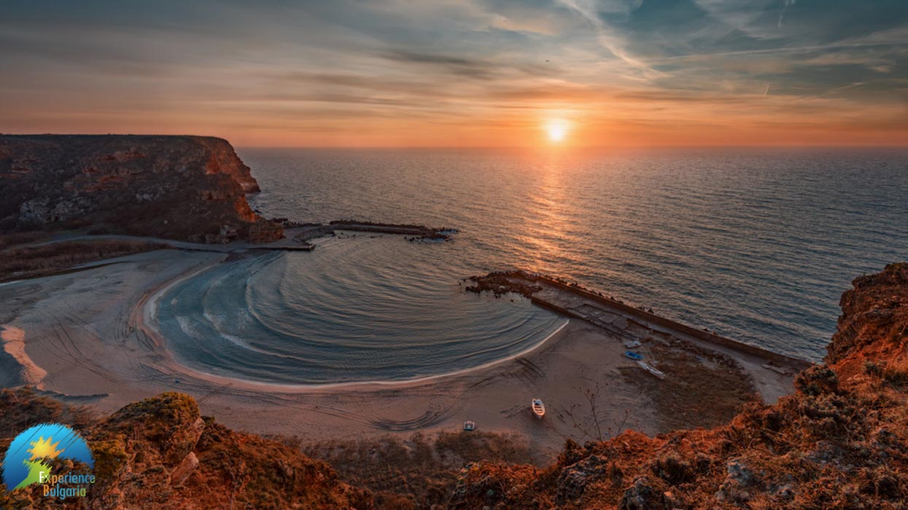

Залив Болата
Болата е местност, разположена на едноименния залив и е част от резерват Калиакра. Намира се в северната част на Българското Черноморие край село Българево
и в близост до бивша военна станция. Местността е влажна зона с голямо значение за няколко редки растителни и животински вида.
